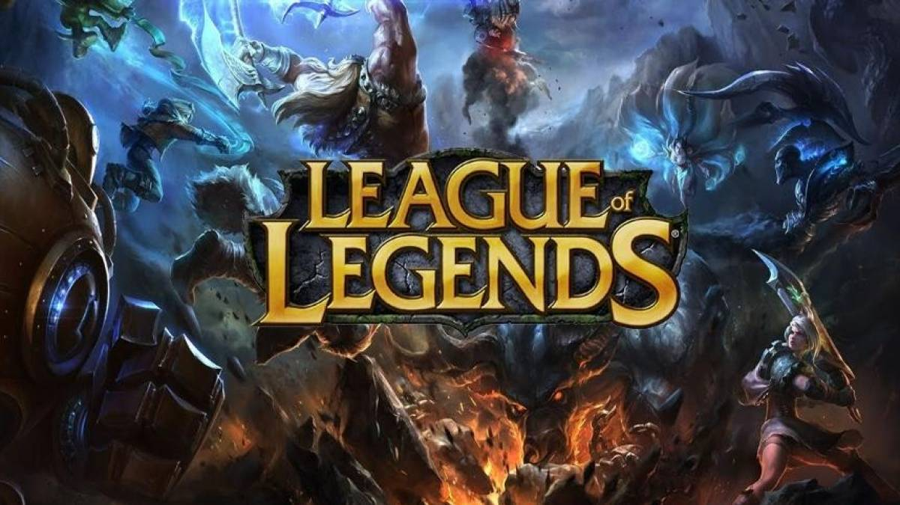
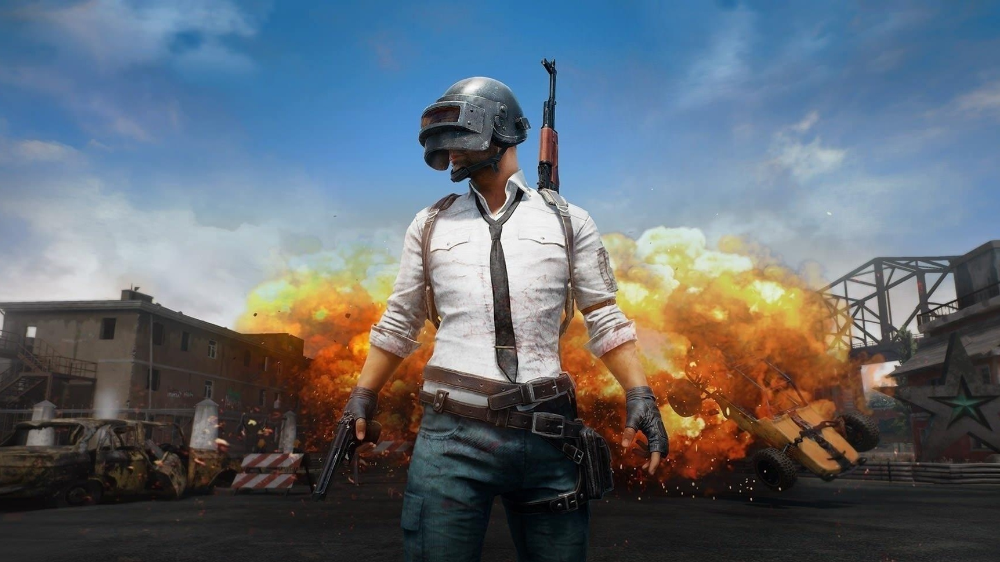
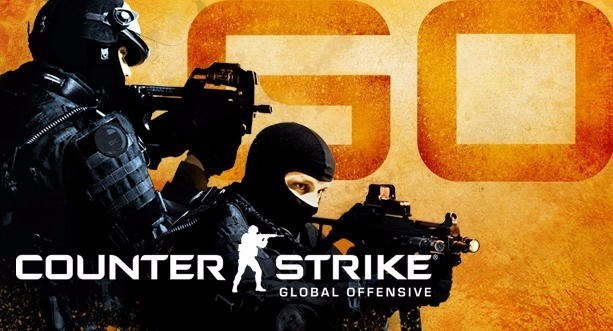
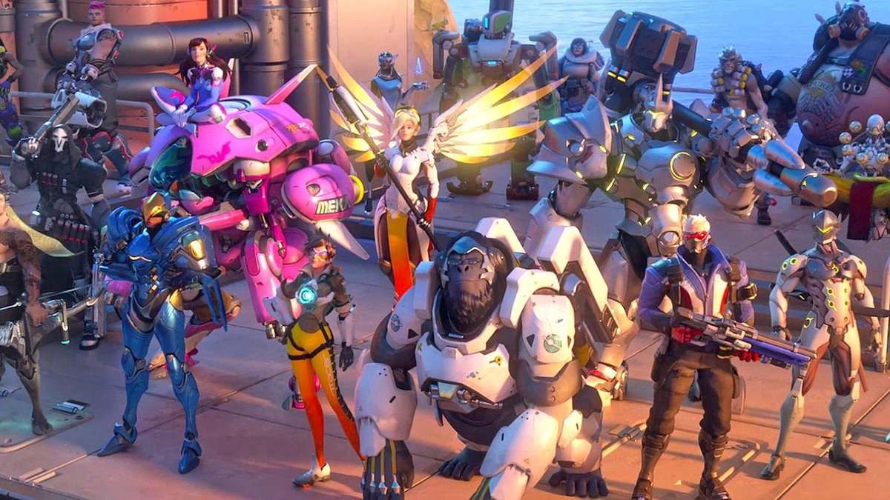
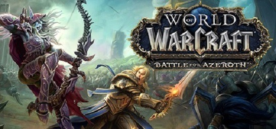
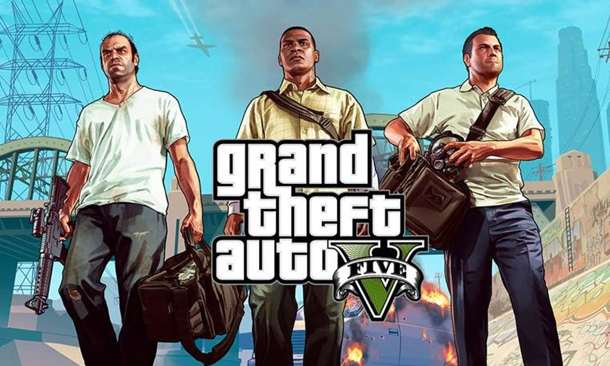

OS JOGOS MAIS JOGADOS DO MUNDO
O eSports, ou esporte eletrônico, veio para ficar. A modalidade de competição profissional com
videogames não é muito nova, mas cresce a cada ano, sempre na cola de jogos de sucesso, como League of
Legends, DotA 2, Counter-Strike, Starcraft e outros.
Você saberia dizer quais são os jogos mais
populares
hoje?
Tem
certeza?
Nessa pesquisa feita pela SuperData Research vamos mostrar quais jogos lideram o
ranking em 2019.
- #10 LEAGUE OF LEGENDS
- Não importa se você quer passar um tempo sozinha ou com amigos, o jogo desenvolvido pela Riot Games é acelerado, exige estratégia e é perfeito para quem gosta de competitividade. Os jogadores são divididos em classes e encaram o papel de “invocadores”, com habilidades únicas em cada partida. League of Legends se tornou um dos grandes movimentadores de e-sports (competições organizadas de jogos eletrônicos), com finais de campeonatos exibidas por canais esportivos.
- 
- #9 HEARTHSTONE
- Se você é fã de cartas, o jogo criado pela Blizzard Entertainment pode ter tudo a ver com seu estilo e o melhor: é gratuito. Hearthstone é estratégico para fãs do mundo Warcraft e, apesar de ser com baralhos (o que faz a gente acreditar que é meio paradão, né?), o game é agitado com suas várias combinações possíveis.

- #8 PLAYERUNKNOWN’S
- É um jogo multiplayer da Battlegrounds Bluehole Studio. No game, que pode ter até cem jogadores, todos caem de paraquedas em uma ilha à procura de armas e equipamentos para matar inimigos e tentar sobreviver ao mesmo tempo.
- 
- #7 Fortnite Battle Royale
- Criado pela Epic Games, o título gratuito popularizou o formato battle royale (jogo de batalha real). Nele, os jogadores caem em um ambiente e precisam juntar equipamentos para construir estruturas e se proteger. O legal é que é possível quebrar materiais para construir novos. O mapa reduz de tamanho ao longo da partida e, no fim, sobra um jogador contra o outro, até restar apenas um vencedor.

- #6 Counter Strike: Global Offensive
- Mesmo que você não entende nada do mundo dos games, já ouviu esse nome por aí. Essa é a quarta franquia de Counter Strike, jogo da Valve Corporation. O jogo foi lançado em 2012 e ganhou uma série de atualizações desde então. Em 2018, o game se tornou gratuito e ganhou um modo battle royale.
- 
- #5 Minecraft
- Criado pela Mojang, o jogo é sucesso entre crianças e adultos e consiste em construir um mundo com cubos. É um jogo de exploração e criatividade, o objetivo é colocar blocos e se aventurar.

- #4 Overwatch
- Esse é um clássico quem gosta de jogar em grupo e no espírito de cooperatividade. Criado pela Blizzard Entertainment, o game consiste em partidas de tiro em equipe em prol de um futuro pelo qual vale a pena lutar. Cada jogador tem suas próprias habilidades e funções dentro do time.
- 
- #3 Rainbow Six: Siege
- Numa pegada de realismo e trabalho em equipe, os jogadores são membros da equipe anti-terrostistas Raibown e precisam enfrentar o inimigo, The White Masks. O game da Ubisoft Entertainment pede muita cooperação porque os personagens têm diferentes nacionalidades, habilidades e equipamentos

- #2 World of Warcraft
- Esse é um dos maiores jogos do gênero MMORPGs, que é a união entre os chamados "Massively Multiplayer Online Game" (Jogos Online Multijogador) e RPG (Jogo de Interpretação de Personagens). Criado pela Blizzard Entertainment, a história acontece no mundo fantástico de Azeroth, onde os jogadores utilizam seus personagens para exterminar monstros, realizar missões, conseguir itens mágicos e passar de nível. Tudo isso com o objetivo de te transformar na verdadeira lenda viva do lugar.
- 
- #1 GTA V
- É o sétimo título da série Grand Theft Auto e foi criado pela Rockstar Games. A saga acontece na cidade San Andreas com três protagonistas criminosos que realizam assaltos e missões sob pressão de uma agência governamental.
- 
MAIS SOBRE E-SPORTS: